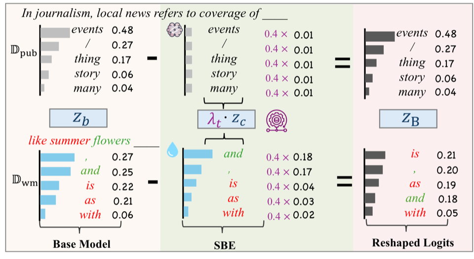

Method
Data-level attacks degrade text quality; model-level baselines like Rank-Swap still leave STAMP/Radioactive-visible signals. Logit Laundering reshapes logits at inference to suppress watermark-induced bias.
At each decoding step, logits are reshaped as
Pipeline:
- Continual pretraining. Base model on public Dpub + watermarked copyrighted Dwm.
- Train SBE. Fit watermark bias on Dwm (ℒfit); flatten unrelated bias on Dpub (ℒflat).
- Inference. Subtract scaled SBE logits; λt from top-1/top-2 margin under a JS budget.
Higher-confidence steps allow stronger suppression; JS budget caps drift from the base distribution.
The steps above summarize the paper pipeline. For the full reproduction workflow (watermark → train-base → SBE training → calibrate → auditing & evaluation), see the README.

Results
Five foundation models (LLaMA-3.2, Qwen2.5, Gemma-2, StableLM-2), mixed public + watermarked book pretraining. Auditors: STAMP, Radioactive, Top-1. Bold = evasion (p ≥ 0.05). Table 3: LLaMA-3.2-1B only (paper Table 9).
| Model | STAMP (p↑) | Radioactive (p↑) | ||
|---|---|---|---|---|
| Non-evasion | Ours | Non-evasion | Ours | |
| LLaMA-3.2-1B | 1.78×10−3 | 0.748 | 2.00×10−4 | 0.995 |
| LLaMA-3.2-3B | 4.08×10−3 | 0.891 | 7.53×10−3 | 0.991 |
| Qwen2.5-1.5B | 1.25×10−5 | 0.412 | 2.97×10−6 | 0.999 |
| Gemma-2-2B | 2.62×10−3 | 0.706 | 3.22×10−4 | 0.907 |
| StableLM-2-1.6B | 1.99×10−4 | 0.965 | 5.95×10−5 | 0.998 |
| Method | LA-1B | LA-3B | Qw-1.5B | Ge-2B | SLM-1.6B | Avg |
|---|---|---|---|---|---|---|
| Foundation | 31.8% | 64.5% | 71.8% | 56.2% | 35.2% | 51.9% |
| Non-evasion | 73.4% | 82.9% | 79.7% | 83.6% | 59.2% | 75.8% |
| Rank-Swap (SS) | 38.2% | 45.4% | 54.4% | 45.4% | 43.0% | 45.3% |
| Ours | 72.8% | 82.3% | 80.0% | 83.3% | 59.1% | 75.5% |
| Method | PPL↓ | MAUVE↑ | Judge↑ |
|---|---|---|---|
| Non-evasion | 6.22 | 0.178 | 83.7 |
| Rank-Swap (SS) | 36.5 | 0.055 | 43.9 |
| Ours | 5.75 | 0.255 | 79.9 |
Code & Data
Official PyTorch implementation with a unified CLI (logit-laundering).
Copyright-protected book corpora from our experiments are not released;
the full pipeline is public—prepare your own JSON/JSONL and follow the
README
(中文).
BibTeX
@inproceedings{hu2026logitlaundering,
title={Logit Laundering: Evading Data-Use Auditing in Large Language Models},
author={Hu, Ruihan and Luo, Wei and Shang, Yu-Ming and Wang, Jiakai and Zhang, Chuxuan and Li, Mei and Zhang, Xi and Qiu, Meikang},
booktitle={Proceedings of the ACM Conference on Computer and Communications Security (CCS)},
year={2026}
}